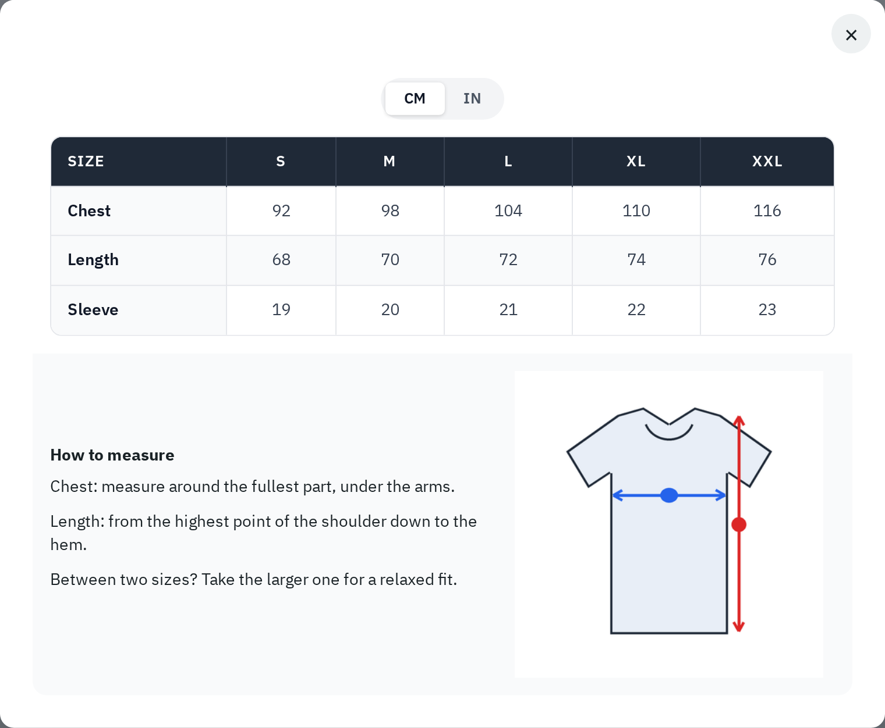

Designs everything the shopper sees in popup mode. The Live preview at the top shows the button on a sample product page and changes while you edit. Click the button in the preview, or Open popup, to see the popup with your chart. Apply default style fills every popup setting with the default look (nothing is saved until you click Save).

Open popup: the chart in the popup, exactly as the shop will show it.